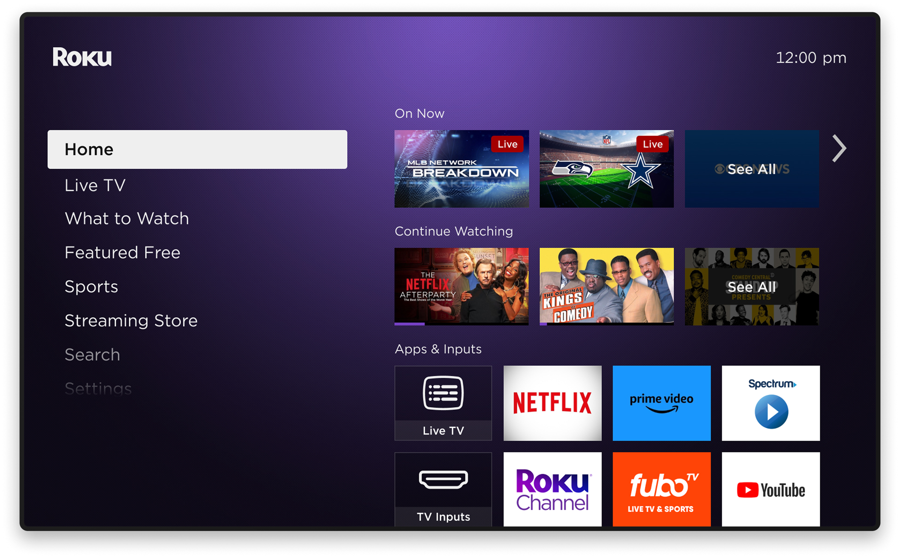
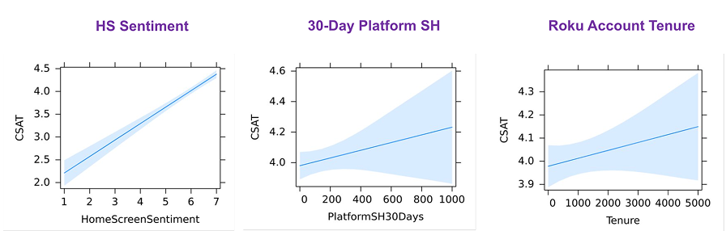
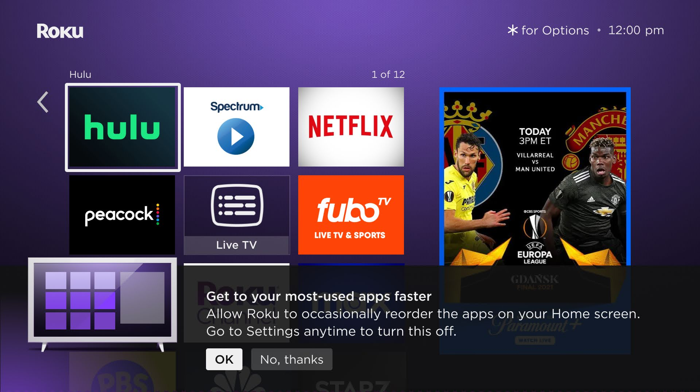
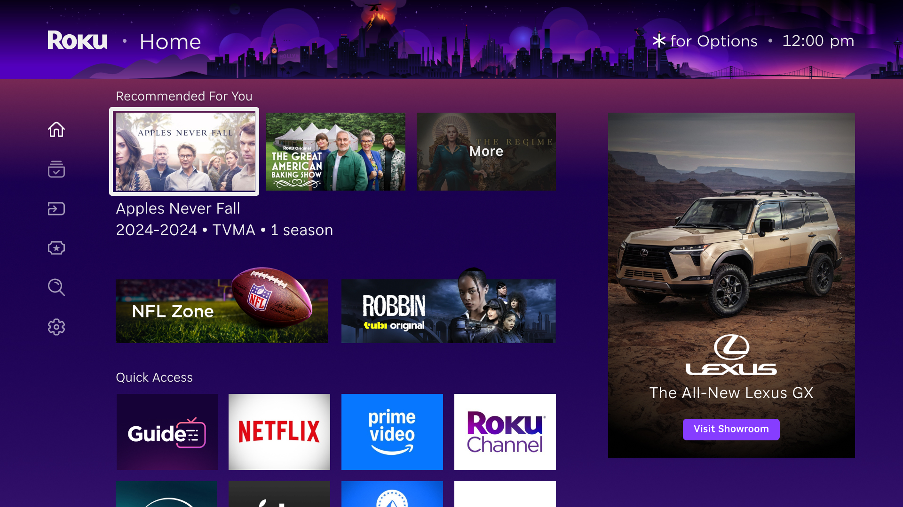

Roku
Roku is a streaming platform operating across hardware and software, serving millions of users across North America, LATAM, APAC, and Europe.
OVERVIEW
Lead designer for International, Live TV, Search, and Homescreen redesign
INSIGHTS FROM USERS
Insights from Users
Roku's Home Screen is very important for our users: Home Screen Sentiment is one of the best predictors of CSAT, even better than Platform Streaming Hours or Account Tenure.
Based on the user's survey on perception: 77% Simplicity, 51% Helpfulness, 15% Delight.

A/B TESTS
A/B tests
In order to increase delight and helpfulness perception in the product, we ran a series of A/B tests that would break down specifics of our home screen, without changing its simplicity.

OUTCOME
A/B experiments averaged a 15–18% increase in OTT streaming hours
Ran A/B experiments across the Homescreen to optimize content discovery, personalization, and streaming engagement. Each test targeted a specific friction point without compromising the simplicity score users valued most.
HOMESCREEN
The Redesign
The Homescreen serves multiple stakeholders with competing priorities: Ads needs real estate for promoted content, Discovery wants algorithmic rows to surface new titles, OTA partners require channel scan and live TV placement, and OTT services need prominent app tiles.
Every pixel is contested. The redesign had to balance all four teams without letting any one priority dominate, while keeping the simplicity score that users consistently ranked as Roku's most important quality.
